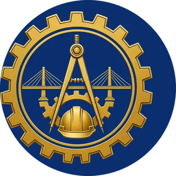

1ª Mostra de Profissões UEMG
Uma tarde para estudantes do Ensino Médio conhecerem os cursos de Direito e Engenharia Civil: as áreas de atuação, atividades práticas e espaço para perguntas e interação. Venha conhecer seu futuro!
A 1ª Mostra de Profissões aconteceu em 13 de novembro de 2026 Obrigado a cada estudante voluntário que ajudou a apresentar a UEMG a quem está começando a pensar no futuro.
Faça parte da equipe
Estamos formando uma equipe de estudantes voluntários para atuar na organização e na execução do evento. Ajude a apresentar a UEMG para quem está começando a pensar no futuro!
Oito frentes de trabalho
Recepção e orientação
Receber e guiar os estudantes do Ensino Médio que chegam à Unidade.
Oficinas e apresentações
Apoiar quem conduz as atividades práticas e as falas sobre os cursos.
Organização dos espaços
Preparar salas, auditório e áreas de circulação antes e durante o evento.
Coffee break
Montar e cuidar do lanche oferecido aos participantes.
Suporte aos palestrantes
Acompanhar quem vai falar: horário, sala, equipamentos e água.
Stands
Ajudar nos stands dos cursos e conversar com quem passar por eles.
Tour pela universidade
Mostrar a Unidade: salas, laboratórios, biblioteca e os espaços dos cursos.
Apoio operacional geral
Estar a postos para o que o evento precisar ao longo da tarde.
Tudo o que você precisa saber
- Quando Sexta, 13 de novembro de 2026, a partir das 13h
- Onde UEMG Unidade Guanhães
- Para quem Estudantes do Ensino Médio que estão pensando no futuro
- Atividades Apresentação dos cursos, áreas de atuação, atividades práticas e espaço para perguntas e interação
- Realização Diretório Acadêmico Sapientia et Justitia
Direito e Engenharia Civil
-
Direito
Voz, justiça e transformaçãoBacharelado de 10 semestres, à noite, com 40 vagas por ano.
-

Engenharia Civil
Planejando, projetando e construindo o futuroBacharelado de 10 semestres, à noite, com 40 vagas por ano.
Avise quem pode ajudar
Conhece alguém da Unidade que leva jeito para receber gente, explicar o curso ou organizar? Mande esta página.